MỤC 01Lịch sử hình thành
Từ một thương cảng sầm uất bên bờ sông Tiền đến vị thế một trong Lục tỉnh Nam Kỳ, Định Tường đã ghi dấu hành trình khai khẩn, giao thương và giữ đất của các thế hệ cư dân phương Nam.
1679–1785: Mỹ Tho đại phố và hào khí giữ đất
Cuối thế kỷ XVII, những lớp lưu dân người Việt cùng cộng đồng người Hoa đã chung sức khai phá vùng đất bên bờ sông Tiền. Cột mốc năm 1679 gắn liền với sự kiện đoàn người Minh Hương do tướng Dương Ngạn Địch dẫn đầu đến định cư dưới sự cho phép của chúa Nguyễn. Nhờ vị trí đắc địa tại ngã ba sông Bảo Định và sông Tiền, "Mỹ Tho đại phố" nhanh chóng vươn mình thành thương cảng sầm uất. Lúa gạo, nông sản và hàng hóa theo ghe thuyền từ khắp nơi đổ về, tạo nên cảnh "trên bến dưới thuyền" nhộn nhịp bậc nhất vùng đồng bằng.
Cùng với phát triển kinh tế, bộ máy hành chính tại đây cũng sớm được chúa Nguyễn xác lập thông qua việc lập dinh Long Hồ (đặt sở lỵ tại Mỹ Tho) vào năm 1732, và sau đó lập dinh Trấn Định vào năm 1779. Khép lại hơn một thế kỷ khai khẩn là chiến thắng Rạch Gầm – Xoài Mút vào đầu năm 1785: nghĩa quân Tây Sơn do Nguyễn Huệ chỉ huy, đã đập tan gần 5 vạn quân xâm lược Xiêm La trên sông Tiền, giữ vững chủ quyền vùng đất phương Nam.

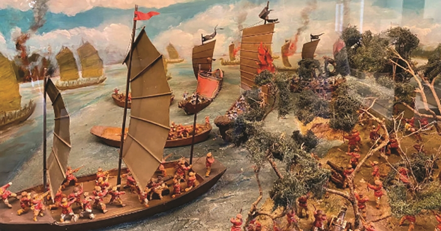
1808–1832: Từ trấn đến tỉnh
Năm 1808, dinh Trấn Định đổi thành trấn Định Tường, thuộc Gia Định thành. Năm 1832, trong cuộc cải cách hành chính quy mô lớn, vua Minh Mạng bãi bỏ Gia Định thành và chia vùng đất phía Nam thành 6 tỉnh: Biên Hòa, Gia Định, Định Tường, Vĩnh Long, An Giang và Hà Tiên. Tỉnh Định Tường chính thức được thành lập với lỵ sở tại Mỹ Tho; ban đầu có phủ Kiến An và các huyện Kiến Hưng, Kiến Đăng, Kiến Hòa.
Thời điểm mới thành lập, tỉnh quản lý 1 phủ (Kiến An) với 3 huyện (Kiến Hưng, Kiến Đăng, Kiến Hòa); đến năm 1841 lập thêm phủ Kiến Tường. Địa giới Định Tường khi đó rất rộng lớn, bao gồm phần đất tỉnh Tiền Giang, phần lớn tỉnh Đồng Tháp và một phần tỉnh Long An sau này.

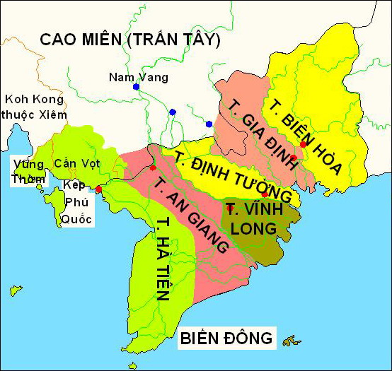
1861–1862: Bước ngoặt của vùng đất
Tháng 4/1861, thực dân Pháp đánh chiếm Định Tường. Đến năm 1862, triều đình Huế ký Hòa ước Nhâm Tuất, nhượng 3 tỉnh Gia Định, Định Tường, Biên Hòa cho Pháp. Phong trào kháng chiến của nhân dân địa phương sau đó bùng nổ mạnh mẽ, tiêu biểu là các cuộc khởi nghĩa của Bình Tây Đại nguyên soái Trương Định (tại Gò Công), Thủ khoa Nguyễn Hữu Huân, Thiên hộ Võ Duy Dương (tại Đồng Tháp Mười) và nhiều bậc nghĩa sĩ khác.

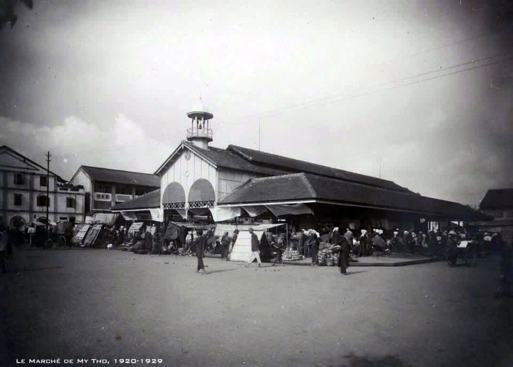
Tên gọi qua các thời kỳ
Dưới thời Pháp thuộc, hệ thống hành chính có nhiều xáo trộn: thực dân Pháp xóa bỏ các tỉnh cũ, chia nhỏ địa bàn Định Tường thành các hạt tham biện như Mỹ Tho, Gò Công, Tân An và Sa Đéc. Giai đoạn 1956–1975, chính quyền Việt Nam Cộng hòa sử dụng lại tên gọi tỉnh Định Tường (hợp nhất từ tỉnh Mỹ Tho và một phần tỉnh Gò Công), nhưng phạm vi hẹp hơn nhiều so với thời nhà Nguyễn.
Tháng 2/1976, tỉnh Mỹ Tho, tỉnh Gò Công và thành phố Mỹ Tho chính thức hợp nhất thành tỉnh Tiền Giang. Đến năm 2025, thực hiện chủ trương sắp xếp các đơn vị hành chính, Tiền Giang và Đồng Tháp hợp nhất thành tỉnh Đồng Tháp mới, trung tâm hành chính đặt tại Mỹ Tho.

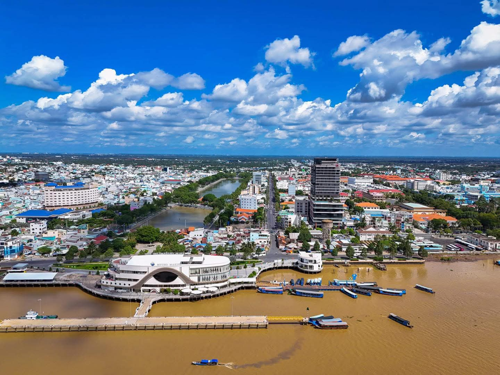
MỤC 02Vị trí địa lý & Phạm vi lãnh thổ
Thời nhà Nguyễn (thế kỷ XIX)
Không gian địa lý mang tính liên vùng rộng lớn, trải dài từ lưu vực sông Vàm Cỏ Tây và vùng rốn lũ Đồng Tháp Mười ở phía Bắc - Tây Bắc, chạy dọc theo bờ bắc sông Tiền vươn thẳng ra Biển Đông ở phía Đông.
Thời Pháp thuộc (1867–1945)
Không gian thống nhất bị phá vỡ hoàn toàn. Địa bàn cốt lõi quanh Mỹ Tho bị thu hẹp thành một dải đất hẹp ven sông Tiền, mất quyền quản lý đối với vùng trũng Đồng Tháp Mười (về Sa Đéc, Long Xuyên), lưu vực sông Vàm Cỏ (về Tân An) và vùng ven biển (tách thành Gò Công).
Giai đoạn 1956–1975
Diện tích chỉ còn bằng một phần nhỏ so với thời Nguyễn. Đặc biệt từ sau năm 1963 (khi Gò Công tách ra lần nữa), Định Tường hoàn toàn trở thành tỉnh nội địa nằm dọc sông Tiền, mất đường bờ biển phía Đông và vùng thượng nguồn Đồng Tháp Mười (lúc này đã tách thành tỉnh Kiến Tường và Kiến Phong).
Sau hợp nhất năm 2025
Việc sáp nhập Tiền Giang và Đồng Tháp thành tỉnh Đồng Tháp mới (diện tích 5.938,64 km²) đã tái lập gần như trọn vẹn không gian địa lý lịch sử của tỉnh Định Tường thời Minh Mạng - kết nối lại mạch nguồn từ vùng thượng châu thổ Đồng Tháp Mười dọc theo sông Tiền ra đến Biển Đông.

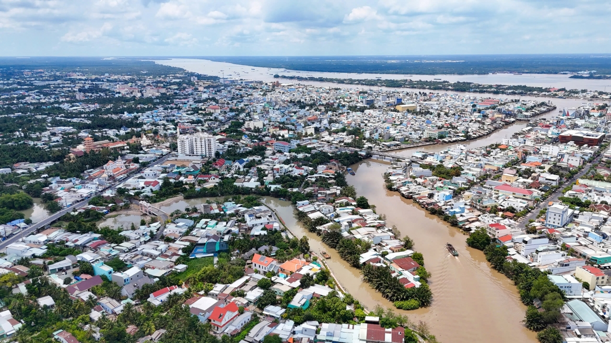
MỤC 03Con người & Văn hóa
Bản sắc Định Tường xưa được hình thành qua quá trình cộng cư và giao thương sầm uất của người Việt, Hoa và Khmer tại vùng cửa ngõ sông Tiền.
Sự giao thoa Việt – Hoa – Khmer nơi đô hội thương cảng
Là vùng đất khai phá sớm với thương cảng "Mỹ Tho đại phố", cư dân Định Tường đã hun đúc nên tính cách hào hiệp, trọng nghĩa tình, năng động và hiếu học. Sự giao thoa văn hóa giữa 3 dân tộc in đậm dấu ấn qua kiến trúc đình làng, chùa cổ (như chùa Vĩnh Tràng, chùa Bửu Lâm), hội quán người Hoa, các làng nghề truyền thống (đóng tủ thờ Gò Công, dệt chiếu Long Định...) và nền ẩm thực đặc sắc với món hủ tiếu Mỹ Tho trứ danh.

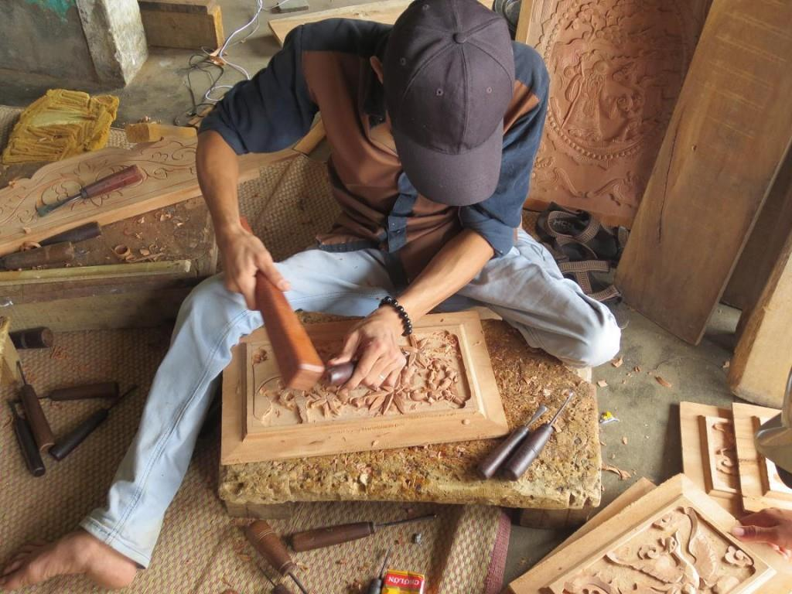

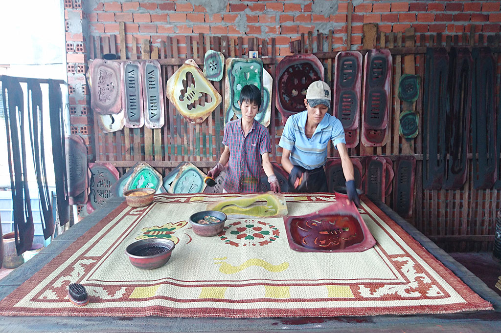
Văn hóa miệt vườn và cái nôi của nghệ thuật sân khấu
Nằm trải dài bên bờ bắc sông Tiền, đời sống người dân gắn liền với cảnh trên bến dưới thuyền và những vườn cây ăn trái trù phú. Không gian văn hóa ấy đã nuôi dưỡng đời sống tinh thần phong phú, đưa Định Tường trở thành một trong những chiếc nôi của nghệ thuật Đờn ca tài tử và Cải lương Nam Bộ. Truyền thống khoa bảng tại đây cũng phát triển rực rỡ, là nơi hội tụ của nhiều sĩ phu và danh nhân văn hóa lớn.

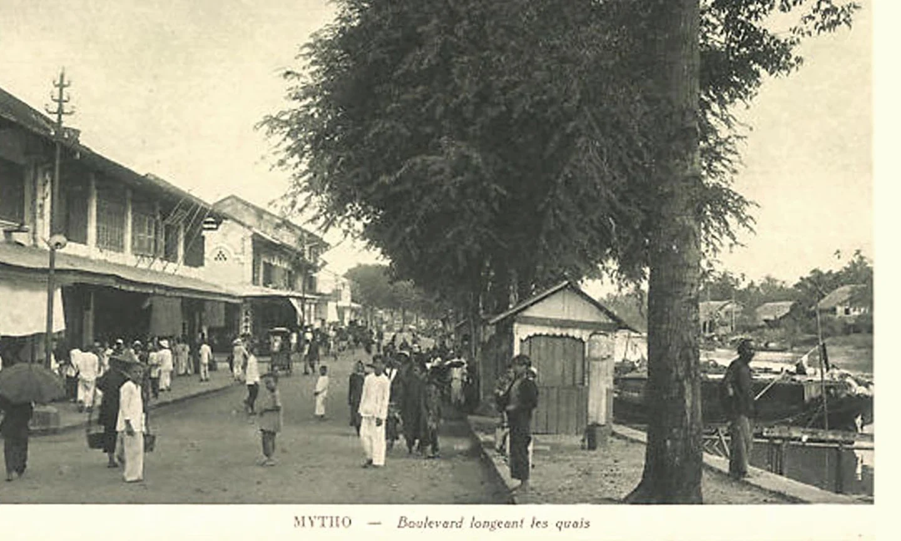

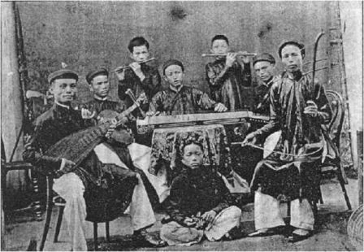
Lễ hội và di sản: Tri ân tiền nhân, gìn giữ cội nguồn
Định Tường là vùng đất "địa linh nhân kiệt", quê hương của nhiều danh nhân lịch sử và các bậc hoàng hậu triều Nguyễn (như Thái hậu Từ Dụ, Nam Phương Hoàng hậu). Đạo lý "uống nước nhớ nguồn" của người dân được thể hiện qua các lễ hội truyền thống hằng năm như: lễ hội tưởng niệm Anh hùng dân tộc Trương Định, lễ giỗ Thủ khoa Nguyễn Hữu Huân, lễ Kỳ yên tại các đình thần và lễ hội Nghinh Ông vùng biển Gò Công, góp phần gắn kết cộng đồng và lưu giữ mạch nguồn lịch sử.
MỤC 04Danh nhân & Công cuộc mở cõi
Lịch sử hình thành và phát triển của vùng đất Định Tường gắn liền với công cuộc khai phá thương cảng, khẩn hoang lập ấp và bảo vệ non sông.
Năm 1679, nhóm di thần nhà Minh do Dương Ngạn Địch dẫn đầu được chúa Nguyễn cho vào khai khẩn vùng Ba Giồng và tả ngạn sông Tiền, đặt nền móng dựng nên "Mỹ Tho đại phố" sầm uất. Sự hưng thịnh của nơi này là tiền đề quan trọng để thành lập đạo Trung Lương (1731), dinh Trấn Định (1779) và tỉnh Định Tường vào năm Minh Mạng thứ 13 (1832).
Đặc biệt, vào đầu năm 1785, dòng sông Tiền đoạn qua Định Tường đã ghi dấu chiến công hiển hách của người anh hùng áo vải Nguyễn Huệ (vua Quang Trung) khi chỉ huy trận thủy chiến Rạch Gầm – Xoài Mút, đánh tan 5 vạn quân Xiêm xâm lược, trở thành mốc son trong lịch sử dân tộc.

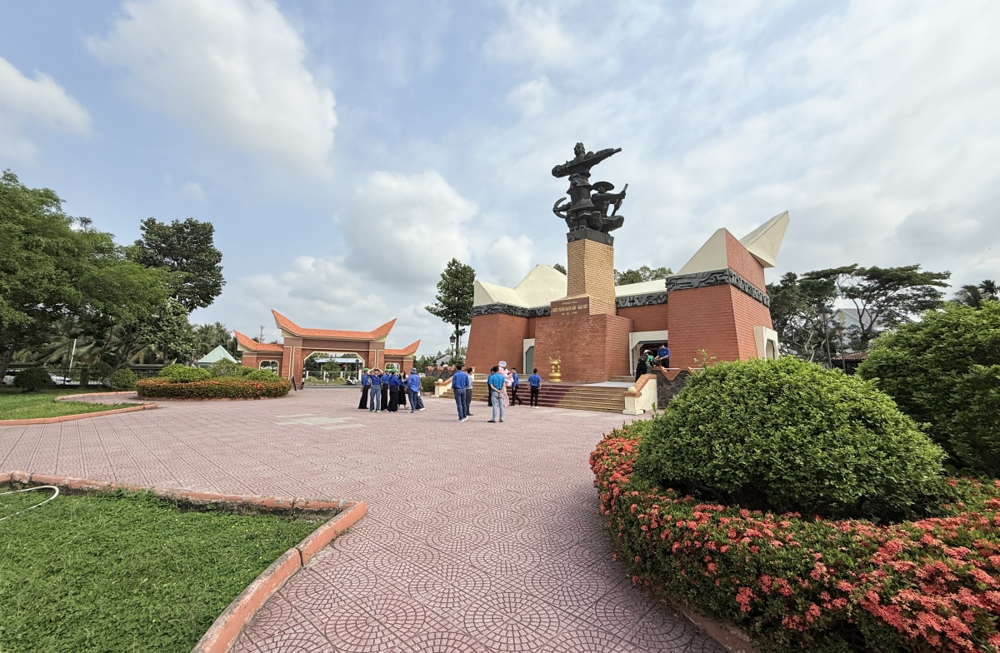
Trong công cuộc chống thực dân Pháp và bồi đắp văn hóa Nam Bộ, nơi đây nổi bật với khí phách bất khuất của Bình Tây Đại nguyên soái Trương Định cùng cuộc khởi nghĩa ở căn cứ Gò Công. Về truyền thống Y – Nho, danh nhân văn hóa Nguyễn Đình Chiểu từng có thời gian tị địa tại làng Bình Hòa Trung (Chợ Gạo), mở trường dạy học, bốc thuốc cứu dân và dùng ngòi bút khích lệ tinh thần yêu nước. Bên cạnh đó, đất Gò Công còn là quê hương của Đức Quốc Công Phạm Đăng Hưng – bậc đại thần thanh liêm, thân sinh Thái hoàng Thái hậu Từ Dụ.

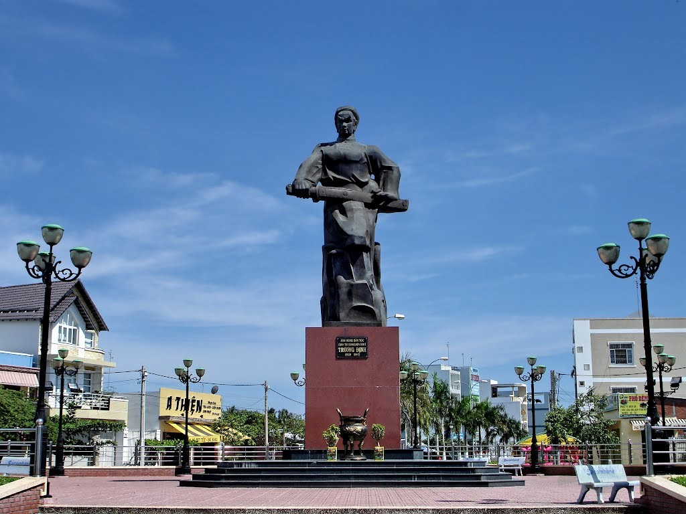
Bước sang thế kỷ XX và hai cuộc kháng chiến giải phóng dân tộc, đất Định Tường – Tiền Giang tiếp tục là nơi tôi luyện nhiều nhà lãnh đạo cách mạng và trí thức lớn của đất nước. Những người con ưu tú như Chủ tịch Quốc hội Nguyễn Hữu Thọ, Đại tướng Lê Văn Dũng cùng nhiều thế hệ đồng bào đã kế thừa truyền thống của tiền nhân, đóng góp to lớn vào sự nghiệp đấu tranh thống nhất và xây dựng Tổ quốc.
MỤC 05Y học cổ truyền & Cây thuốc
Từ thế kỷ XVII – XVIII, cùng sự phồn thịnh của thương cảng Mỹ Tho đại phố, vùng đất Định Tường xưa sớm hình thành và phát triển nền y thuật dân gian mạnh mẽ. Sự kết hợp giữa tri thức Nam y bản địa, truyền thống y – nho của các sĩ phu di cư và sự giao lưu với các hiệu thuốc Bắc của người Hoa đã tạo nên một diện mạo y học cổ truyền phong phú.
Đáng chú ý, vùng trũng phèn Đồng Tháp Mười (Bắc Định Tường, nay thuộc khu vực Tân Phước, Cai Lậy) sở hữu nguồn dược liệu dồi dào. Tiêu biểu là cây tràm (Melaleuca cajuputi) với lá giàu tinh dầu cineol dùng cất dầu xoa bóp, trừ phong thấp, sát trùng, giải cảm; cây sen (Nelumbo nucifera) với tim sen, hạt sen, ngó sen giúp an thần, thanh tâm, bồi bổ; cùng các loài thủy sinh mọc hoang như mã đề thảo, rau mác, bèo cái có tác dụng thanh nhiệt, lợi tiểu và giải độc phèn.

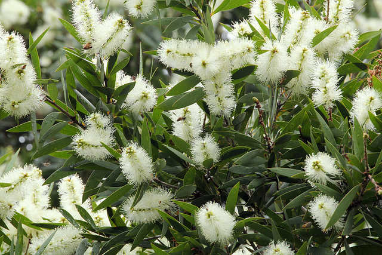

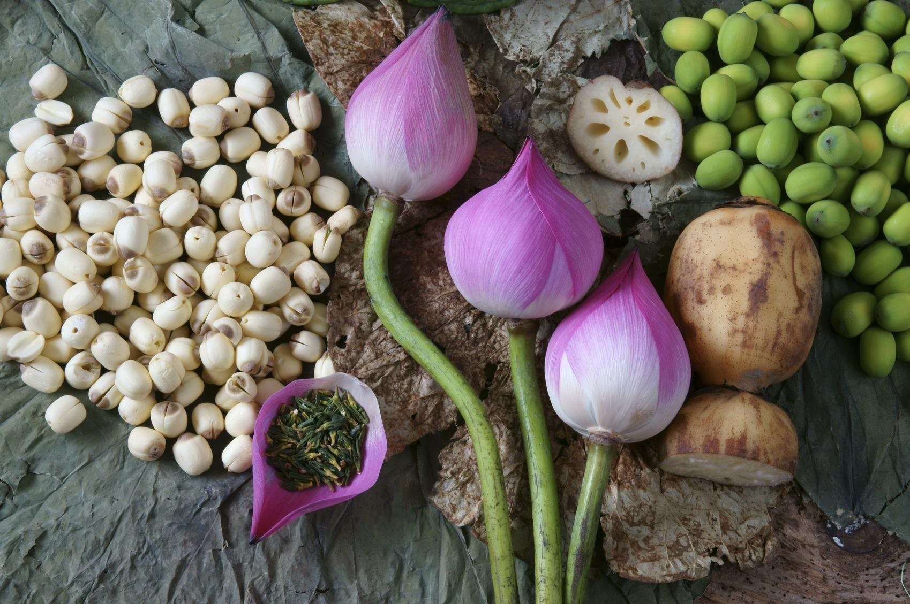
Bên cạnh đó, dải đất phù sa và các giồng cát ven biển (Gò Công) còn là kho tàng cây thuốc miệt vườn gắn chặt với ẩm thực dưỡng sinh. Nổi bật là các loại cây ăn trái và gia vị dược liệu như bưởi lông Cổ Cò, quất, chanh trị ho hóa đờm, hay đinh lăng, ngải bún, gừng, lá lốt dùng trị phong hàn và đau nhức xương khớp. Dòng chảy y đạo nơi đây còn được bồi tụ nhờ dấu ấn của các danh Nho – Lương y (tiêu biểu như cụ Nguyễn Đình Chiểu thuở dạy học, bốc thuốc tại Chợ Gạo), đưa cây thuốc bản địa thành các bài thuốc Nam cứu chữa hiệu quả cho dân lao động thời bấy giờ.

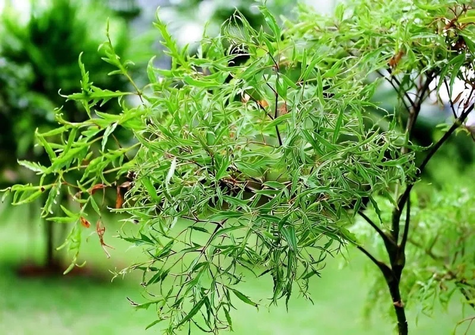

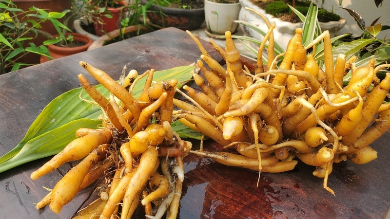
MỤC 06Ẩm thực & Đặc sản
Trải dài từ vùng trốn phèn Đồng Tháp Mười xuống dải đất phù sa ngọt tả ngạn sông Tiền và vươn ra vùng nước lợ cửa biển Gò Công – Xoài Rạp, vùng đất Định Tường xưa là sự kết tinh giữa sản vật thiên nhiên, kỹ thuật giao thương của đô thị cổ "Mỹ Tho đại phố" và phong vị cung đình chốn Gò Công.
- Vùng sinh thái Đồng Tháp Mười (vùng trũng phía Bắc Tiền Giang, tiếp giáp Long An và Đồng Tháp trước khi sáp nhập): Nổi bật với văn hóa ẩm thực mùa nước nổi. Người dân tận dụng nguồn thủy sản dồi dào để làm các loại mắm, cá khô dự trữ quanh năm; kết hợp với các loại rau đặc trưng như bông súng, điên điển, hẹ nước, rau nhút... để biến tấu nên các món ăn đầy hương vị.

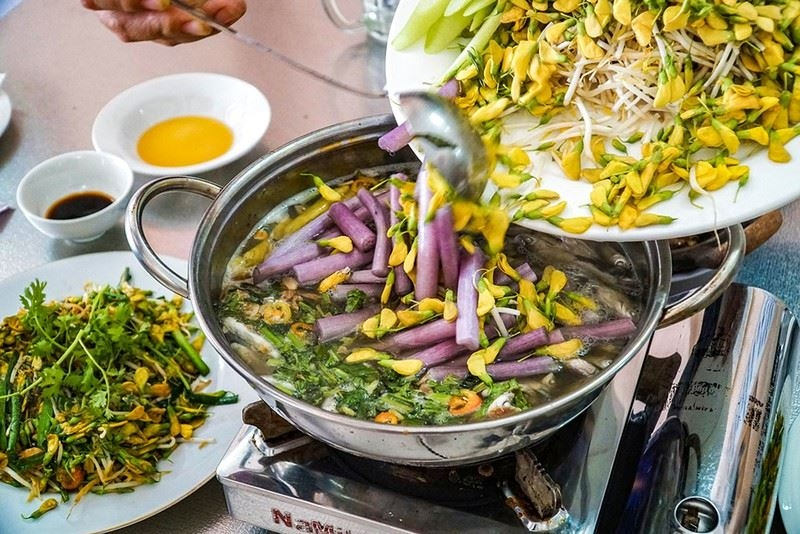

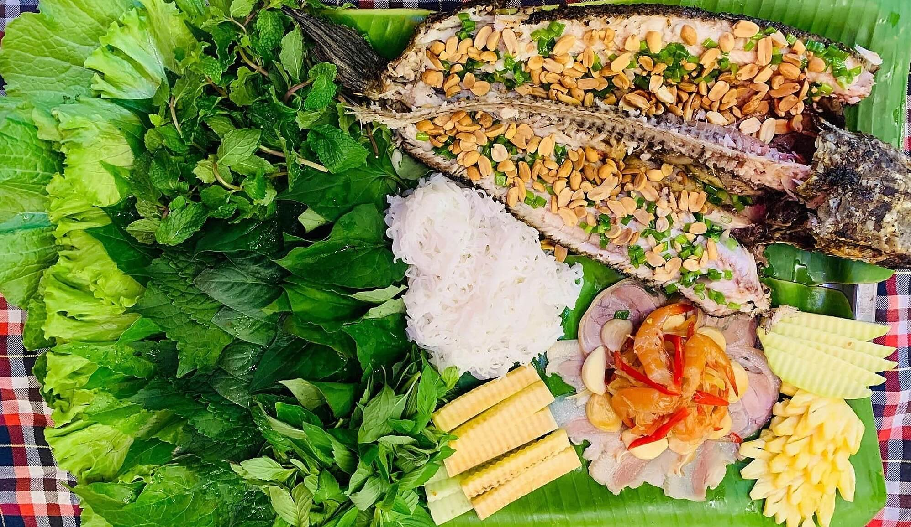
- Vùng phù sa ven sông Tiền (trọng tâm là khu vực Cái Bè, Cai Lậy, Mỹ Tho): Cái nôi của những vườn cây ăn trái trù phú và các làng nghề chế biến từ lúa gạo. Nhờ giao thương sầm uất giữa người Việt và người Hoa từ thế kỷ XVII, nơi đây đã định hình nên những món ăn tinh tế như hủ tiếu, bánh xèo, bánh tằm bì, bánh giá...


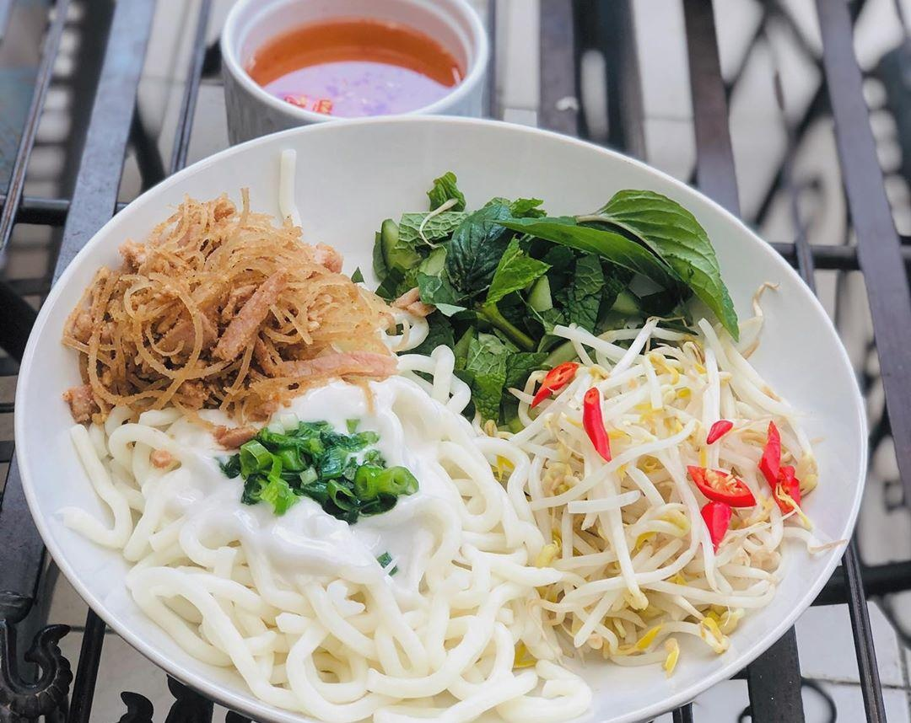

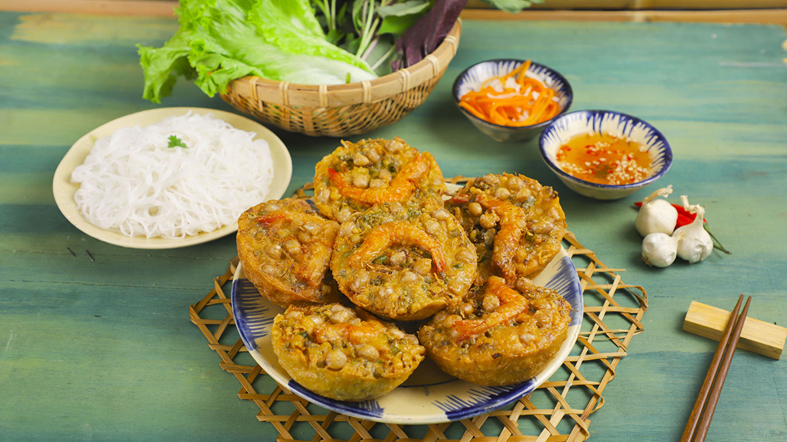

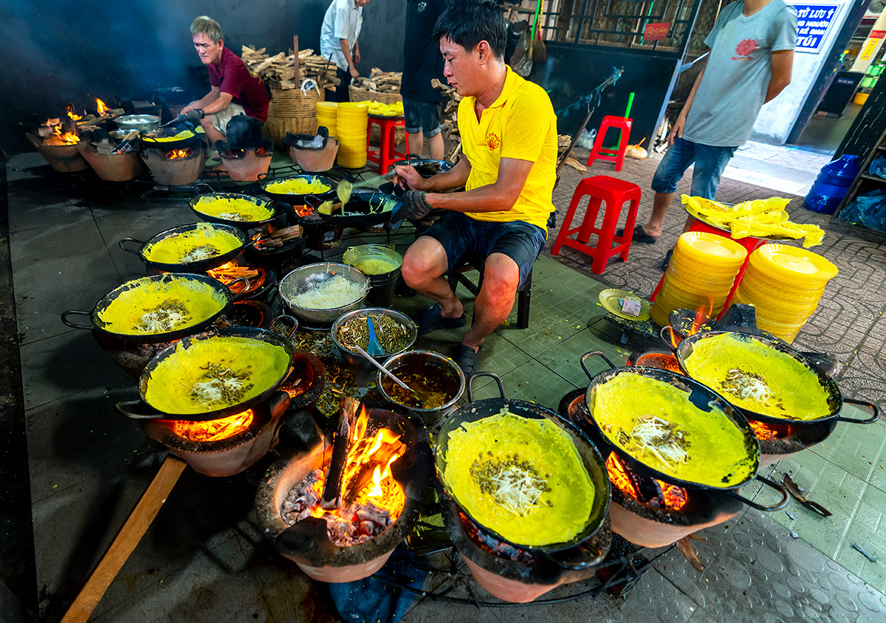

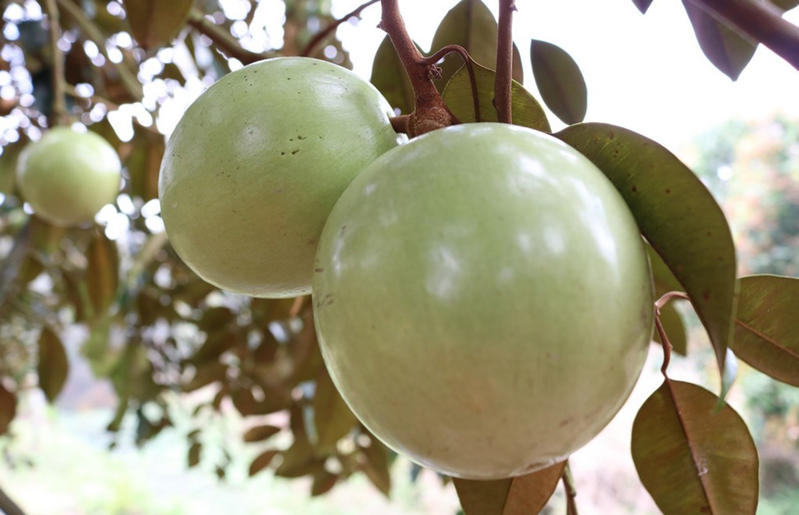

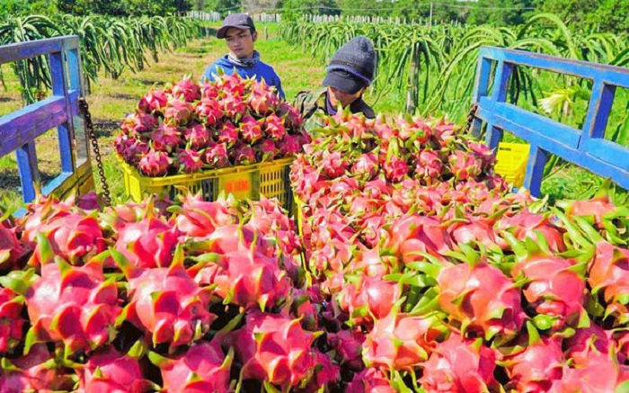
- Vùng giồng cát và cửa biển nước lợ Gò Công: Có nguồn hải sản ven bờ phong phú, nổi danh với nghệ thuật làm mắm tôm, mắm còng... cùng các giống gạo tiến vua nức tiếng.

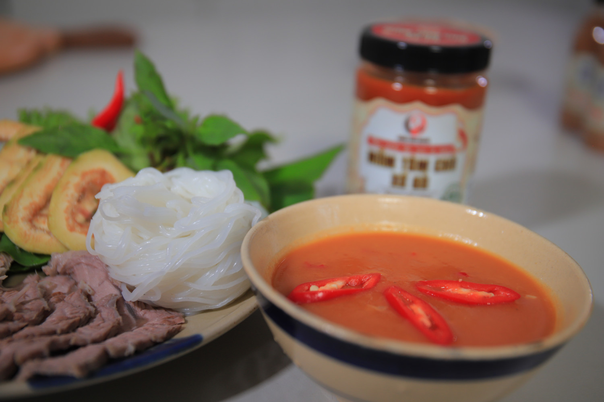

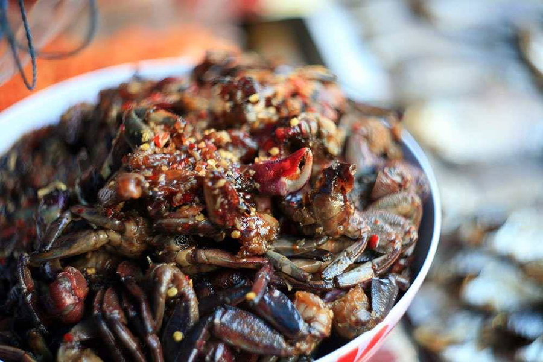
MỤC 07Di tích & Thắng cảnh
Khi đặt các di tích và thắng cảnh của vùng đất Định Tường xưa vào chung một bức tranh tổng thể, có thể nhận diện 3 mạch nguồn nổi bật:
- Không gian sinh thái ngập phèn Đồng Tháp Mười: Phía Bắc Định Tường xưa là vùng trũng phèn hoang sơ, hiểm trở. Dấu ấn cảnh sắc này ngày nay được lưu giữ tại Khu sinh thái Đồng Tháp Mười (Tân Phước), nơi bảo tồn hệ sinh thái rừng tràm nguyên sinh, đồng sen, súng ngập nước cùng cùng các loài động vật đặc trưng.
- Văn hóa miệt vườn tả ngạn và đô thị "Mỹ Tho đại phố": Dải đất ven sông Tiền sở hữu chuỗi cù lao cây trái trù phú như cồn Thới Sơn, cù lao Tân Phong. Sự hưng thịnh của thương cảng cổ Mỹ Tho cùng tầng lớp điền chủ xưa đã để lại di sản kiến trúc đặc sắc kết hợp Việt - Hoa - Pháp, tiêu biểu qua các di tích như làng nhà cổ Đông Hòa Hiệp và chùa Vĩnh Tràng.
- Hào khí sĩ phu và dòng chảy văn hóa - y đạo: Định Tường là mảnh đất của những chiến công vệ quốc hiển hách, khắc ghi qua di tích Rạch Gầm – Xoài Mút cùng căn cứ khởi nghĩa Trương Định chốn Gò Công. Về phương diện y - nho, vùng đất này từng là nơi danh sĩ Nguyễn Đình Chiểu mở trường dạy học, bốc thuốc cứu dân (Chợ Gạo), làm nền tảng cho truyền thống y thuật dân gian phương Nam.
Khu di tích Rạch Gầm – Xoài Mút
Nằm bên bờ sông Tiền, Khu di tích Rạch Gầm – Xoài Mút là công trình tưởng niệm chiến thắng năm 1785 của quân Tây Sơn, được xếp hạng Di tích quốc gia đặc biệt vào năm 2014. Điểm nhấn của khu di tích là cụm tượng đài Hoàng đế Quang Trung bằng đồng uy nghi hướng ra mặt sông, kết hợp cùng hệ thống nhà trưng bày hiện vật thủy chiến và ngôi nhà cổ Nam Bộ truyền thống.

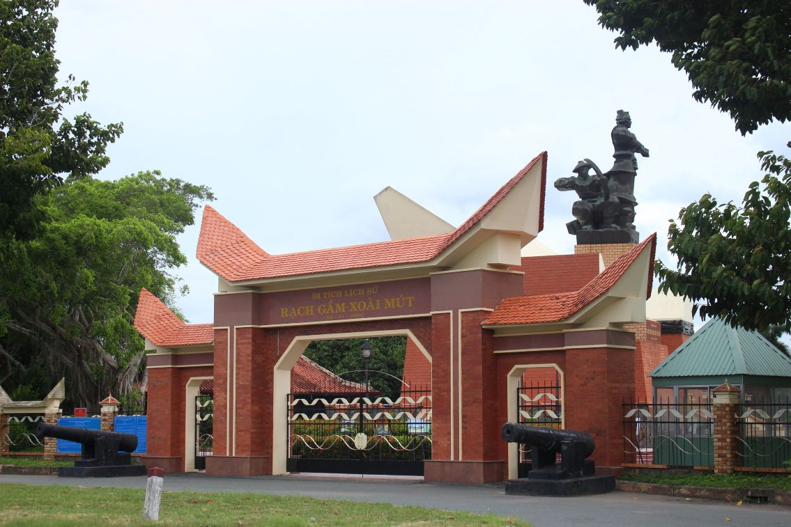

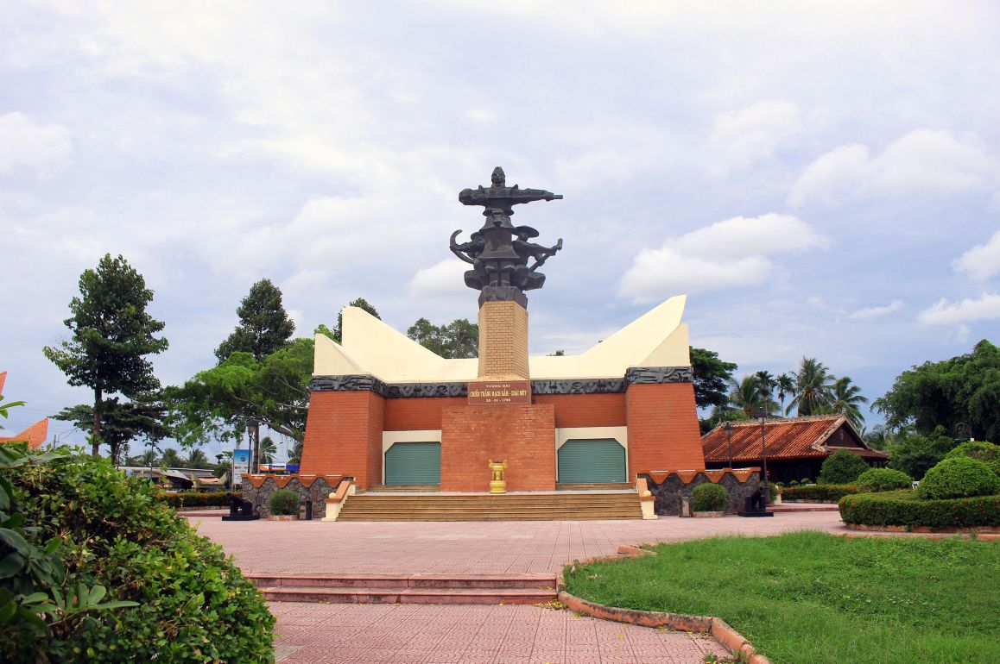
Chùa Vĩnh Tràng
Chùa Vĩnh Tràng là ngôi cổ tự nổi tiếng bậc nhất miền Tây Nam Bộ, được xây dựng từ đầu thế kỷ 19. Điểm đặc sắc nhất của ngôi chùa là lối kiến trúc giao thoa giữa nét Á Đông truyền thống và phong cách phương Tây như Pháp, La Mã hay kiến trúc Chăm Pa.
Giữa khuôn viên rợp bóng cây xanh và hồ sen thanh tịnh là 3 pho tượng Phật khổng lồ: Phật Di Lặc, Phật A Di Đà và Phật Thích Ca nhập Niết bàn. Không chỉ là chốn hành hương linh thiêng, chùa Vĩnh Tràng còn là một kiệt tác nghệ thuật thu hút đông đảo du khách thập phương đến chiêm bái và vãn cảnh.

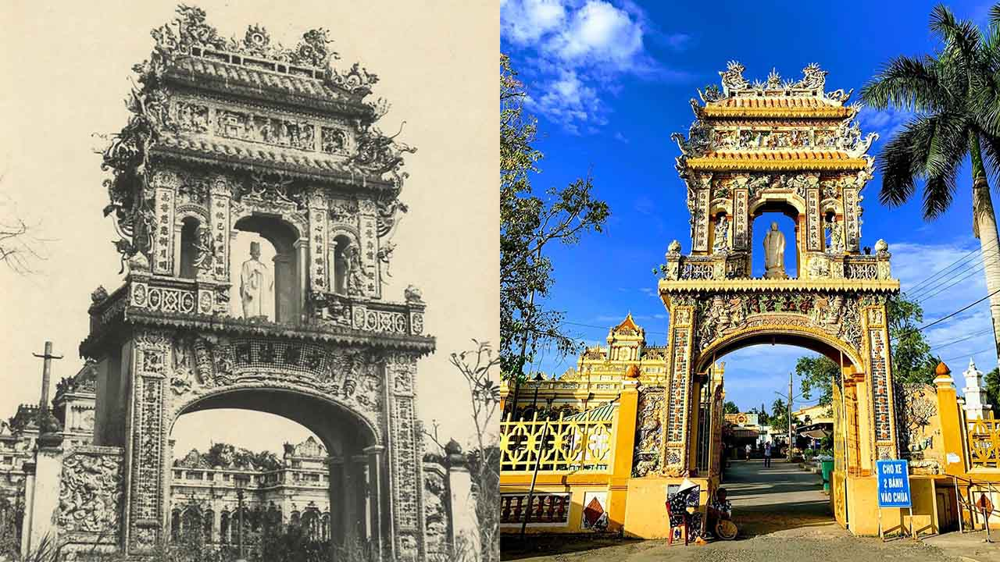

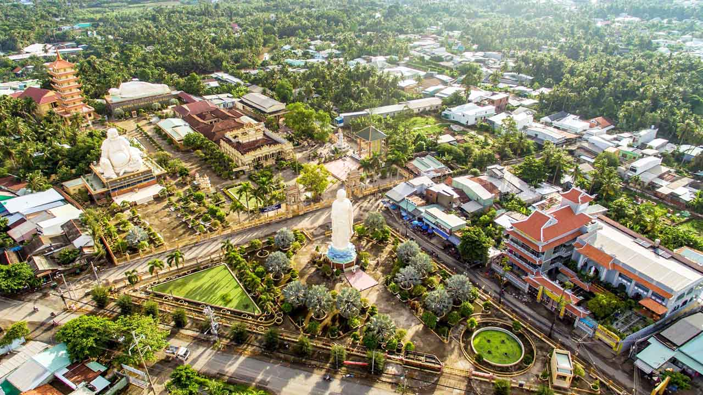
Cù lao Thới Sơn
Nằm giữa dòng sông Tiền mênh mông, cù lao Thới Sơn là viên ngọc xanh của mảnh đất Tiền Giang. Nhờ phù sa bồi đắp quanh năm, vùng đất này phát triển mạnh nghề trồng cây ăn trái như nhãn, chôm chôm, bưởi cùng nghề nuôi ong lấy mật truyền thống.
Ghé thăm Thới Sơn, du khách sẽ được trải nghiệm cảm giác lênh đênh trên chiếc xuồng ba lá len lỏi qua những rạch dừa nước rợp bóng mát. Trên cù lao, bạn có thể ghé các lò kẹo dừa thủ công xem cách sên kẹo, uống tách trà mật ong pha quất và nghe đờn ca tài tử ngay tại nhà vườn.

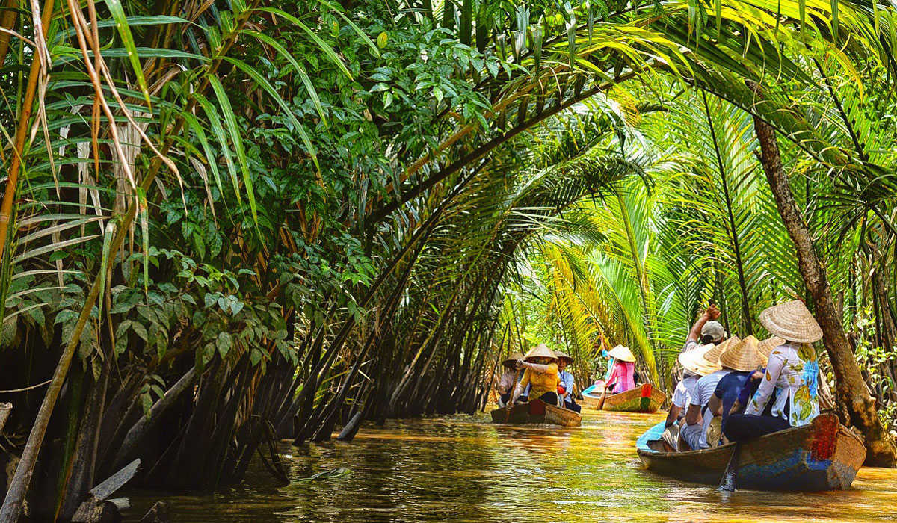

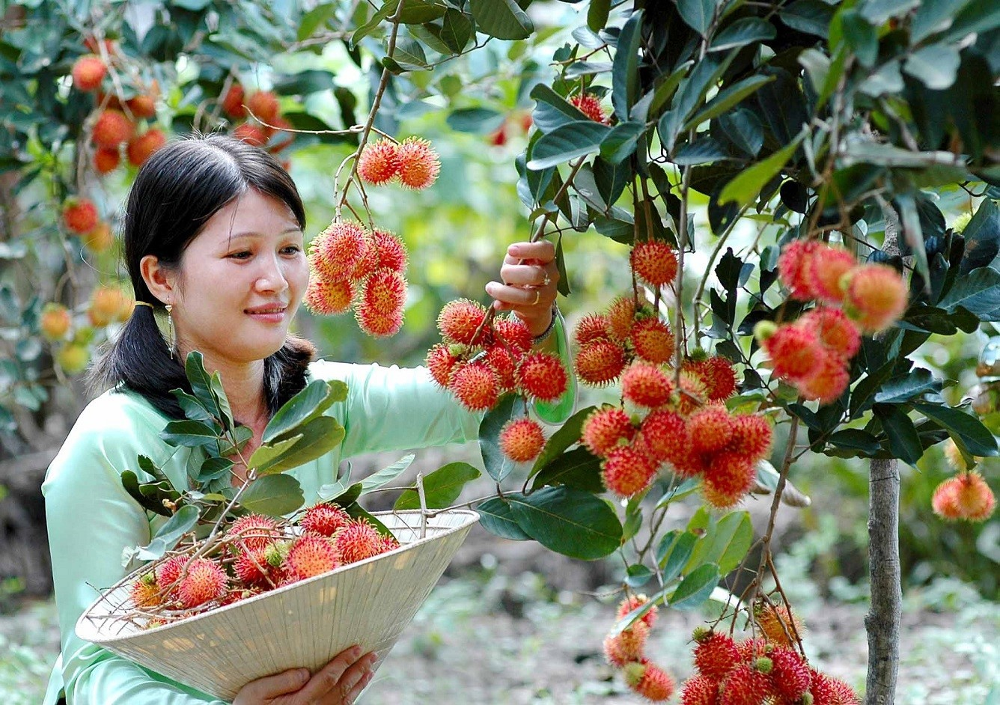
Khu bảo tồn sinh thái Đồng Tháp Mười
Khu bảo tồn nằm trong vùng lõi sinh thái quan trọng của Đồng Tháp Mười, được bao bọc bởi hệ thống rừng tràm rộng hơn 106ha - nơi đóng vai trò như "lá phổi xanh" của cả vùng. Nơi đây hiện là ngôi nhà chung của hơn 156 loài thực vật, 147 loài chim, 34 loài cá, 8 loài lưỡng cư và 30 loài côn trùng. Đặc biệt, nhiều loài đang có nguy cơ tuyệt chủng hoặc nằm trong Sách đỏ Việt Nam và thế giới như sếu đầu đỏ, mèo rừng, nhím, rùa núi vàng, già đẫy, trăn gấm…

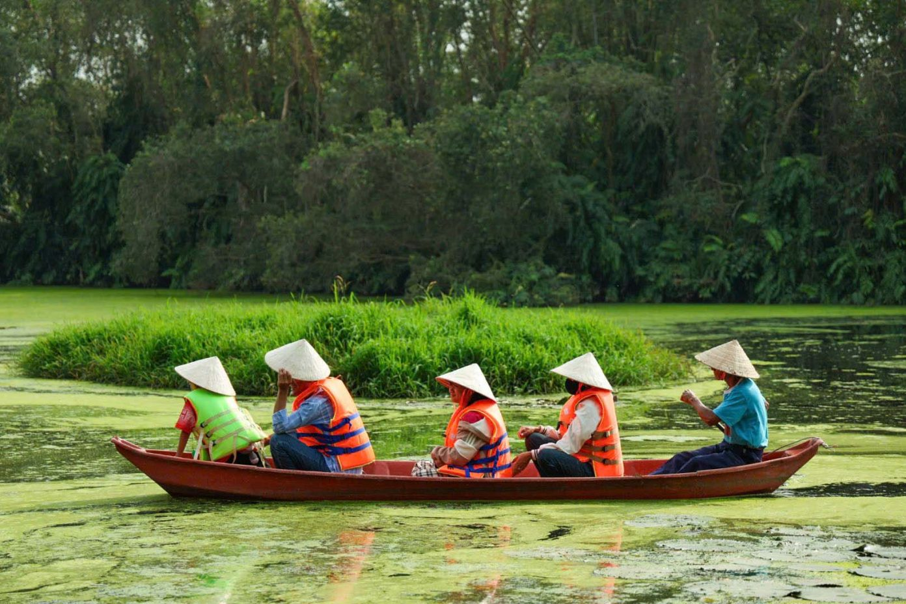

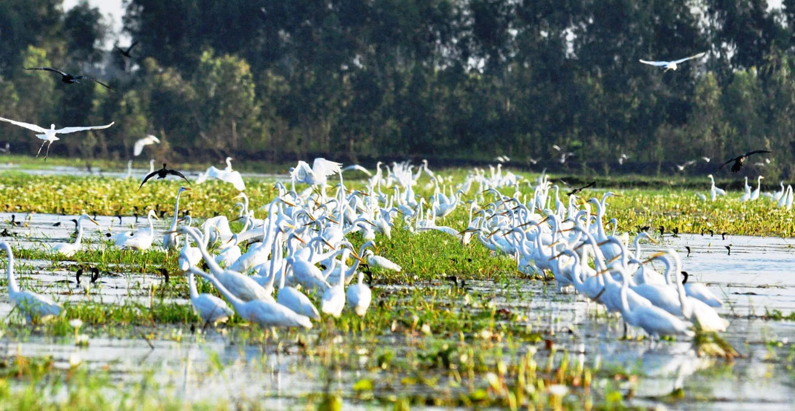